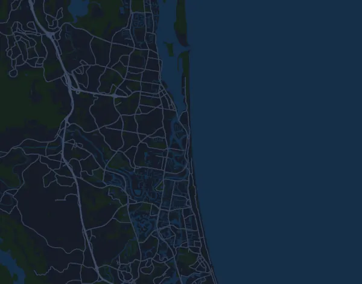

Gold Coast Marathon 42,7 km
- Matka
- 42,7 km
- Nousumetrit
- ↑ 454 m
- Korkein kohta
- 21 m mpy
- Alusta
- Maantie
- Luonne
- Loivasti mäkinen
Korkeusprofiili
Valmistaudu Milan kanssa
Mila on juoksuvalmentaja sovelluksessa. Kun lisäät kisan suunnitelmaasi, valmentaja suunnittelee viikot starttiin asti kuntosi mukaan ja antaa sinulle loppuaikaennusteen sekä suunnitelman vauhdista, juomisesta ja energiasta reitillä.

Oikea harjoitus. Oikea päivä.
Reitti

Tietoa reitistä
ASICS Gold Coast Marathon on 42,7 km:n maantiejuoksu (Southport, Gold Coast, Australia). Reitillä on nousua 454 m ja laskua 461 m, 11 m/km, joten reitti on loivasti mäkinen. Korkein kohta on 21 m ja matalin −4 m merenpinnan yläpuolella.
Reitillä ei ole yhtenäisiä vähintään 25 nousumetrin nousuja.
Mila-sovelluksessa valmentaja kuvailee reitin tarkasti omalla kielelläsi ja suunnittelee vauhtisi ja energiasi sille.
Vauhtitaulukko
Gold Coast Marathon 42,7 km ajassa 3:00:00 – vauhti kilometrillä ja väliajat
4:13 min/km · km 10: 42:07 · km 21,1: 1:28:53 · km 30: 2:06:22 · km 40: 2:48:30 · maali: 3:00:00
Gold Coast Marathon 42,7 km ajassa 3:30:00 – vauhti kilometrillä ja väliajat
4:55 min/km · km 10: 49:09 · km 21,1: 1:43:42 · km 30: 2:27:26 · km 40: 3:16:35 · maali: 3:30:00
Gold Coast Marathon 42,7 km ajassa 4:00:00 – vauhti kilometrillä ja väliajat
5:37 min/km · km 10: 56:10 · km 21,1: 1:58:31 · km 30: 2:48:30 · km 40: 3:44:40 · maali: 4:00:00
Gold Coast Marathon 42,7 km ajassa 4:30:00 – vauhti kilometrillä ja väliajat
6:19 min/km · km 10: 1:03:11 · km 21,1: 2:13:20 · km 30: 3:09:34 · km 40: 4:12:45 · maali: 4:30:00
Ajat olettavat tasaisen vauhdin koko matkan. Tämä on pelkkää laskentaa, ei ennuste: mäissä, ruuhkassa ja juomapisteillä vauhti vaihtelee.
Usein kysyttyä
Gold Coast Marathon 42,7 km: milloin kisa juostaan?
Gold Coast Marathon 42,7 km juostaan sunnuntai 4. heinäkuuta 2027. Tarkista päivä ja lähtöaika järjestäjältä.
Gold Coast Marathon 42,7 km: kuinka pitkä matka on ja paljonko nousua on?
Matka on 42,7 km, nousua 454 m ja laskua 461 m. Korkein kohta on 21 m mpy.
Gold Coast Marathon 42,7 km: millainen reitti on?
Reitti on loivasti mäkinen, nousua keskimäärin 11 m kilometrillä. Reitillä ei ole yhtenäisiä vähintään 25 nousumetrin nousuja. Lähtö ja maali ovat samassa paikassa. Alusta on maantietä.
Gold Coast Marathon 42,7 km: miten jaan vauhtini?
Pyri tasaiseen rasitukseen koko matkan, ja jarruttele ensimmäisillä kilometreillä, kun jalat tuntuvat kevyiltä ja muut karkaavat edelle. Reitti on loivasti mäkinen, joten tasainen vauhti kilometriä kohden toimii hyvin. Milasta saat juuri tälle reitille vauhtisuunnitelman oman kuntosi mukaan.
Lisää samanlaisia kisoja
Lisää kisoja lähellä
- Voltaren City2Surf 14 km8. elokuuta 2027 · Sydney, Australia
- Melrose Great Ocean Road Marathon (44km)16. toukokuuta 2027 · Lorne, Australia
- Ultra-Trail Australia by UTMB – UTA100 101 km15. toukokuuta 2027 · Katoomba, Australia
- Buffalo Stampede 100km (Bright Ultra SkyMarathon)20. maaliskuuta 2027 · Bright, Australia
- Six Foot Track Marathon 45 km13. maaliskuuta 2027 · Katoomba, Australia
- Melbourne Marathon 42,2 kmPäivä ei selvillä · Melbourne, Australia
Valmistaudu Milan kanssa
Oikea harjoitus. Oikea päivä.
Tiedot ovat reittitiedostosta ja järjestäjän tiedoista. Tarkista päivä, lähtöajat ja säännöt järjestäjältä.
Mila ei ole yhteydessä järjestäjään eikä kisan sponsoreihin, eivätkä ne sponsoroi tai suosittele Milaa. Nimet ja tavaramerkit kuuluvat omistajilleen. Järjestäjä tai oikeuksien haltija? Pyydä muutosta tai poistoa